Statistical methods for epigenetics
February 16, 2023
Learning objectives for today1
Be familiar with the types of epigenetic measurements that involve “peak-calling”, and what a peak represents in each
Understand the main statistical test performed by the widely used peak-caller MACS2
Explain the similarities and differences (and understand their implications) between analysis of differential expression and differential methylation, with regard to:
continuous models of microarray data vs count models of sequencing data (similarity)
methylation level represents a proportion vs expression level unbounded (difference)
grouping of sites into differentially methylated regions (difference)
Epigenetics

Recall basics of DNA-binding and DNA methylation assays from lecture 2
Open chromatin & nucleosome positioning

Peak calling
Sequencing after one of these selection/digestion techniques (IP, DNase, MNase, transposase) generally requires a peak-finding analysis
One of the most widely used methods is MACS2:

MACS2
MACS2 overview
- Shift reads to remove strand asymmetry: estimate \(d\) from 1,000 regions
- Let \(\lambda_{BG}\) be the expected number of reads in each window
- Let \(\lambda_{local} = max(\lambda_{BG}, \lambda_{1K}, \lambda_{5K}, \lambda_{10K})\) be the expected number of reads in a window
- P-value for \(k\) observed reads = \(e^{-\lambda_{local}} \sum_{i=0}^k \frac{\lambda_{local}^i}{i!}\)

Post peak-calling
Depending on the type of experiment and the hypotheses, next steps may include (but not limited to):
- annotating peaks with genomic context
- differential binding analysis
- enrichment analysis1
- motif analysis
- integration with other measurements (e.g. expression)
DNA Methylation (5mC)
- chemical modification to an individual DNA base (C = Cytosine), referred to as 5mC (5-methylcytosine)
- doesn’t change coding sequence
- modification can happen at any C, but in mammals occurs almost1 exclusively at CpGs
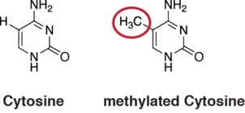
DNA Methylation at CpGs
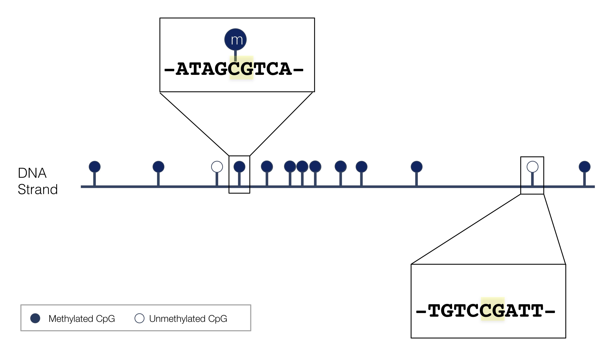~30 Million CpGs in human
The 5th base?
- heritable upon cell division
- 5mC added to complementary strand by methyltransferases
- dynamic
- changes during development and with age
- can be altered by environmental exposure

Role in gene regulation
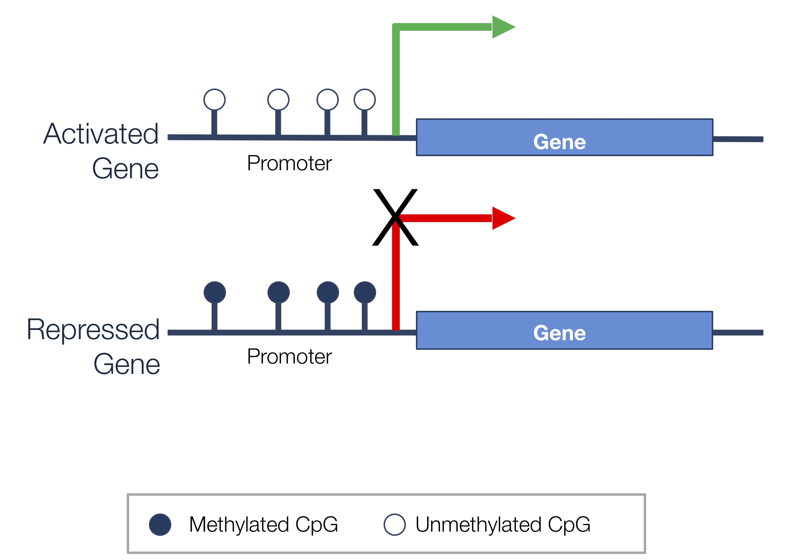Evolution of methylation assays
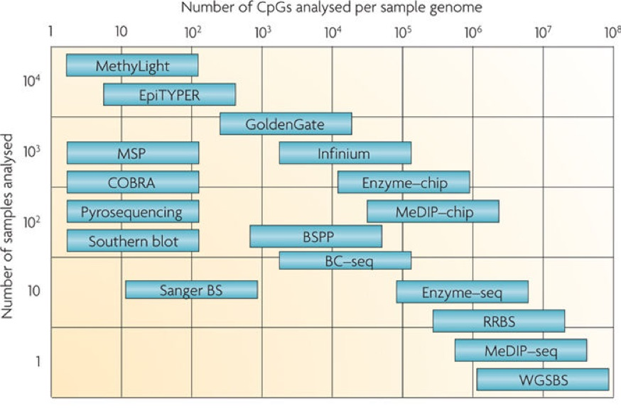Distinguishing methylated and unmethylated sites
- Methylated DNA immunoprecipitation (MeDIP)
- treat fragmented DNA with antibody targeting 5mC
- wash away unbound DNA
- measure extent to which each cytosine is still present (methylated) with microarray or sequencing
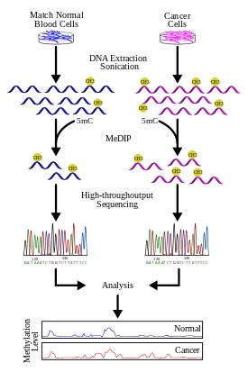
Distinguishing methylated and unmethylated sites
- Bisulfite conversion
- 5mC \(\rightarrow\) stays 5mC
- C (not methylated) \(\rightarrow\) converted to U
- Sequencing:
- 5mC read as C
- C read as T
- For each C measure fraction of signal corresponding to C vs T with microarray or sequencing
- Note that can’t distinguish between C \(\rightarrow\) T mutation and unmethylated C
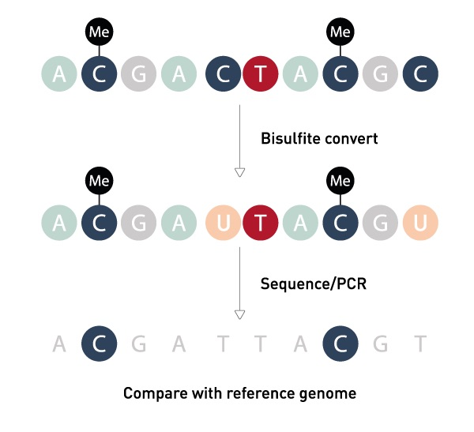
Analysis of MeDIP
- MeDIP targets only methylated DNA
- MeDIP-chip: much like gene expression microarrays
- MeDIP-seq: differential abundance of counts (similar to RNA-seq)
- Complication: instead of genes or transcripts, need to define genomic “bins” to count reads over
- One option is to use sliding windows: MEDIPS R package performs preprocessing and implements
edgeRto test for differential abundance of each window
Bisulfite conversion arrays (e.g. Infinum 450K, Epic 850K)
- Most commonly used human methylation arrays use bisulfite conversion
- 450K / 850K refer to the number of sites probed
- Analysis has similarities to expression microarray analysis
- Signal is continuous (intensity)
- Moderate throughput: 1-16 samples per array
- Difference: focus on relative intensity of methylated vs unmethylated binding affinity
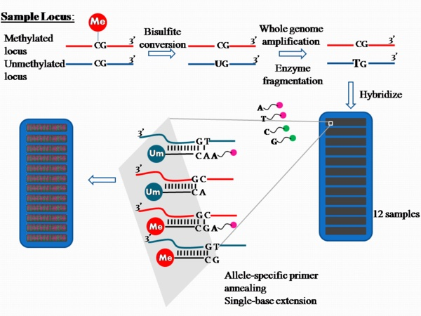
Beta values and M values
Need some way to summarize the two relative measures for each probe:
- methylated intensity
- unmethylated intensity
Beta \((\beta)\) values
- Combine two measurements for each probe, and measure level of methylation: \[\beta = \frac{\text{methylated intensity}}{(\text{methylated intensity} + \text{unmeth intensity})}\]
- Range from 0 to 1
- Easily interpretable as a methylation proportion
- Best used for visualization
M-values
- Transformed \(\beta\) values: \[M= log_2\big(\frac{\text{methylated intensity}}{\text{unmethylated intensity}}\big) = log_2(\beta/(1-\beta))\]
- This type of transformation is referred to as the logit
- maps a proportion onto real line
- alleviate heteroscedasticity of \(\beta\) values (recall that Binomial(n,p) variance = np(1-p))
Methylation array analysis
- Analysis strategy: linear regression on M-values
- R Packages:
- minfi for preprocessing and normalization
- limma for individual cytosine analysis
- bumphunter for region-level analysis
- Workflow that combines these: methylationArrayAnalysis - explore in Seminar 7
Example - DNA Methylation in sorted T cells
“Genome-wide DNA methylation analysis identifies hypomethylated genes regulated by FOXP3 in human regulatory T cells” from Zhang et al. (2013)
To explore the methylation landscape of nTreg, we analyzed genome-wide methylation in human naive nTreg (rTreg) and conventional naive CD4+ T cells (Naive)…. Activation changed the methylation status of …

Example - DNA Methylation in sorted T cells
Data from Zhang et al. (2013)
- GEO accession GSE49667
- Here we use the Bioc objects downloaded from here
class: GenomicRatioSet
dim: 439918 10
metadata(0):
assays(2): M CN
rownames(439918): cg13869341 cg24669183 ... cg08265308 cg14273923
rowData names(0):
colnames(10): naive.1 rTreg.2 ... act_naive.9 act_rTreg.10
colData names(13): Sample_Name Sample_Well ... yMed predictedSex
Annotation
array: IlluminaHumanMethylation450k
annotation: ilmn12.hg19
Preprocessing
Method: Raw (no normalization or bg correction)
minfi version: 1.33.0
Manifest version: 0.4.0Metadata values
Sample_Name Sample_Well Sample_Source Sample_Group Sample_Label
1 1 A1 M28 naive naive
2 2 B1 M28 rTreg rTreg
3 3 C1 M28 act_naive act_naive
4 4 D1 M29 naive naive
5 5 E1 M29 act_naive act_naive
6 6 F1 M29 act_rTreg act_rTreg
act_naive act_rTreg naive rTreg
3 2 3 2 Beta values
[1] 439918 10 naive.1 rTreg.2 act_naive.3 naive.4 act_naive.5 act_rTreg.6
cg13869341 0.84267937 0.85118462 0.8177504 0.82987650 0.81186174 0.8090798
cg24669183 0.81812908 0.82489238 0.8293297 0.75610281 0.81967323 0.8187838
cg15560884 0.77219626 0.74903910 0.7516263 0.77417882 0.77266205 0.7721528
cg01014490 0.08098986 0.06590459 0.0233755 0.04127262 0.04842397 0.0644404
cg17505339 0.89439216 0.93822870 0.9471357 0.90520570 0.92641305 0.9286016
cg11954957 0.74495496 0.79008516 0.7681146 0.84450764 0.75431167 0.8116911
naive.7 rTreg.8 act_naive.9 act_rTreg.10
cg13869341 0.8891851 0.88537940 0.90916748 0.88334231
cg24669183 0.7903763 0.85304116 0.80930568 0.80979554
cg15560884 0.7658623 0.75909061 0.78099397 0.78569274
cg01014490 0.0245281 0.02832358 0.07740468 0.04640659
cg17505339 0.8889361 0.87205348 0.90099782 0.93508348
cg11954957 0.7832207 0.84929777 0.84719430 0.83350220M values
[1] 439918 10 naive.1 rTreg.2 act_naive.3 naive.4 act_naive.5 act_rTreg.6
cg13869341 2.421276 2.515948 2.165745 2.286314 2.109441 2.083313
cg24669183 2.169414 2.235964 2.280734 1.632309 2.184435 2.175771
cg15560884 1.761176 1.577578 1.597503 1.777486 1.764999 1.760819
cg01014490 -3.504268 -3.825119 -5.384735 -4.537864 -4.296526 -3.859792
cg17505339 3.082191 3.924931 4.163206 3.255373 3.654134 3.701096
cg11954957 1.546401 1.912204 1.727910 2.441267 1.618331 2.107829
naive.7 rTreg.8 act_naive.9 act_rTreg.10
cg13869341 3.004332 2.949430 3.323265 2.920691
cg24669183 1.914738 2.537203 2.085423 2.090007
cg15560884 1.709728 1.655782 1.834341 1.874285
cg01014490 -5.313593 -5.100400 -3.575205 -4.360973
cg17505339 3.000690 2.768876 3.185991 3.848438
cg11954957 1.853192 2.494570 2.470994 2.323683Comparing beta and M values
Code
# graphics settings
pal <- brewer.pal(8,"Dark2")
par(mfrow=c(1,2))
# plot beta values
densityPlot(bVals,
sampGroups = targets$Sample_Group,
main = "Beta values",
legend = FALSE,
xlab = "Beta values")
legend("top",
legend = levels(factor(targets$Sample_Group)),
text.col =brewer.pal(8,"Dark2"))
# plot M values
densityPlot(mVals,
sampGroups = targets$Sample_Group,
main = "M-values",
legend = FALSE,
xlab = "M values")
legend("topleft",
legend = levels(factor(targets$Sample_Group)),
text.col = brewer.pal(8,"Dark2"))Comparing beta and M values
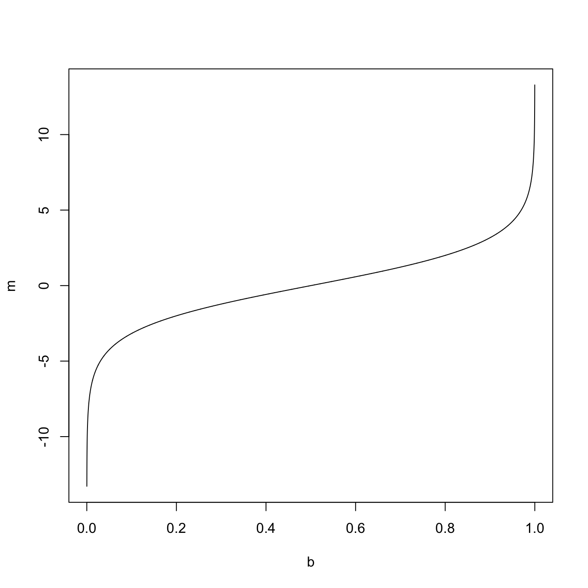Question
Why do we have beta values far from 0 or 1 if methylation is either present or not at each CpG?
Differentially methylated cytosines (DMC)
Which cytosines/probes are differentially methylated between naive & activated naive T cells?
## this is the factor of interest
cellType <- factor(targets$Sample_Group)
## this is the individual effect that we need to account for
individual <- factor(targets$Sample_Source)
## use the above to create a design matrix
design <- model.matrix( ~ cellType + individual,
data = targets)
# rename columns to be more convenient
colnames(design) <- c(levels(cellType),
levels(individual)[-1]) act_naive act_rTreg naive rTreg M29 M30
1 1 0 1 0 0 0
2 1 0 0 1 0 0
3 1 0 0 0 0 0
4 1 0 1 0 1 0
5 1 0 0 0 1 0
6 1 1 0 0 1 0
7 1 0 1 0 0 1
8 1 0 0 1 0 1
9 1 0 0 0 0 1
10 1 1 0 0 0 1
attr(,"assign")
[1] 0 1 1 1 2 2
attr(,"contrasts")
attr(,"contrasts")$cellType
[1] "contr.treatment"
attr(,"contrasts")$individual
[1] "contr.treatment"Differential methylation: limma on M-values
Here, the reference is act_naive cells
## fit the linear model (one for each probe)
mfit <- lmFit(mVals, design)
cfit <- eBayes(mfit)
## look at top DM CpGs between naive and ref (act_naive)
topTable(cfit, coef="naive") logFC AveExpr t P.Value adj.P.Val B
cg15459165 -3.892074 -1.47895212 -22.09541 1.993958e-08 0.002793543 6.810420
cg19704755 -4.139885 0.09100138 -20.35779 3.787335e-08 0.002793543 6.594795
cg13531460 3.484448 -0.63132888 20.23020 3.978221e-08 0.002793543 6.577256
cg17137500 -3.007052 -2.47635924 -20.21569 4.000601e-08 0.002793543 6.575245
cg17048073 -3.650550 -0.87247048 -20.04737 4.270889e-08 0.002793543 6.551674
cg03899643 4.603864 0.02760746 19.86354 4.589787e-08 0.002793543 6.525407
cg19827923 3.316270 0.15932891 19.82438 4.661126e-08 0.002793543 6.519739
cg26800893 -3.080184 -2.39958457 -19.60718 5.080116e-08 0.002793543 6.487839
cg14688905 -3.119261 -1.31909419 -18.94774 6.635412e-08 0.003243375 6.385901
cg21837189 -3.717982 -1.08764112 -18.00052 9.895908e-08 0.003769603 6.224845Summary for all coefficients
Significant tests (BH-adjusted p-value less than 0.05) of the null hypotheses: each coefficient equal to zero
act_naive act_rTreg naive rTreg M29 M30
Down 184747 919 400 827 1367 1245
NotSig 14791 438440 439291 438570 437499 437716
Up 240380 559 227 521 1052 957Note that the first column tests whether the reference group (act_naive) has an M value of zero (not usually of interest)
Interpretation of parameters and effect sizes
- Our previous model gives parameter estimates for differences in M values \(\alpha\)
- To interpret on the scale of methylation proportions, need to back-transform:
- Recall: \(M= log_2\big(\frac{\text{methylated intensity}}{\text{unmethylated intensity}}\big) = log_2(\beta/(1-\beta))\)
- Solving for beta gives \(\beta = \frac{2^M}{(1+2^M)}\)
Summary of array DMC analysis
Just like for limma analysis of gene expression microarray: Can use additive models, models with interactions, continuous and categorical variables
interpretation of hypothesis tests, contrasts with
makeContrasts(for other comparisons not represented by coefficients in our design matrix): follows as beforeinterpretation of parameters/effect sizes: keep in mind that M-values are transformed proportions
- Annotation packages (e.g.
IlluminaHumanMethylation450kanno.ilmn12.hg19) allow for adding information about each CpG- chromosome and position
- strand
- whether in CpG Island
Bisulfite sequencing
Sequencing of bisulfite-converted DNA
WGBS = whole-genome bisulfite sequencing
RRBS = reduced representation bisulfite sequening (targets similar regions to methylation arrays e.g. islands)
Pros: base-pair resolution; WGBS measures all CpGs
Con: expensive (WGBS cost is on the order of whole genome DNA sequencing)
Bisulfite sequencing
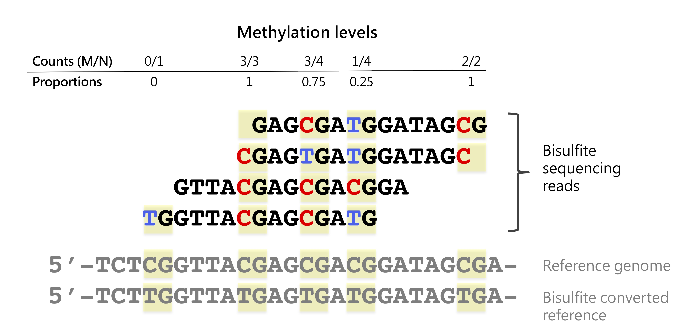Analysis of bisulfite sequencing
BS assays (e.g. WGBS, RRBS) yield base-level counts of methylated \((M \text{counts})\) and ununmethylated \((U \text{counts})\) reads
Differential methylation analysis quantifies significance of differences in proportion of methylated reads \((\frac{M}{M+U})\)
R Packages:
BSmooth: t-test on smoothed methylation proportions
Key idea: methylation levels of nearby CpGs are correlated
use locally weighted polynomial regression values (lowess) to obtain smoothed estimate of methylation difference
similarly, obtain smoothed location-dependent standard deviation
Compute t-test using smoothed quantities
- Red line: 35x coverage
- Black line: subsampled to 5x coverage
Modeling count nature of bisulfite reads
For cytosine \(i\) and sample \(j\) in condition \(s\), we have:
\(M_{ij}\) reads corresponding to methylation
\(N_{ij}\) total reads
Let \(p_s\) be the methylation probability in condition \(s\)
- Let \(M_{ij} \sim Binom(N_{ij}, p_{s})\) for \(j \in s\)
- How to test whether \(p_1 = p_2\) (and optionally adjust for covariates)?
Binomial (Logisitic) regression
- Generalized linear model for probability of success \(p\): \[logit(p)=log\Big(\frac{p}{1-p}\Big) = \boldsymbol{X\beta}\]
- Link function \(g(p) = log\big(\frac{p}{1-p}\big)\) describes relationship between mean parameter of response and linear predictor
- No closed form; fit with iterative ML estimation
- Interpret coefficients on original scale with inverse link function \(g^{-1}: p = \frac{e^{\boldsymbol{X\beta}}}{1+e^{\boldsymbol{X\beta}}}\)
- In R:
glm(cbind(successes, failures) ~ x, family="binomial")
Other link functions for GLM
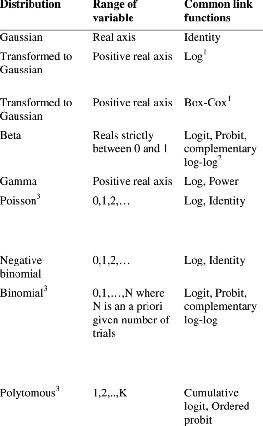Thiele & Markussen 2012 (https://doi.org/10.1079/PAVSNNR20127016)
Why logit transformation?
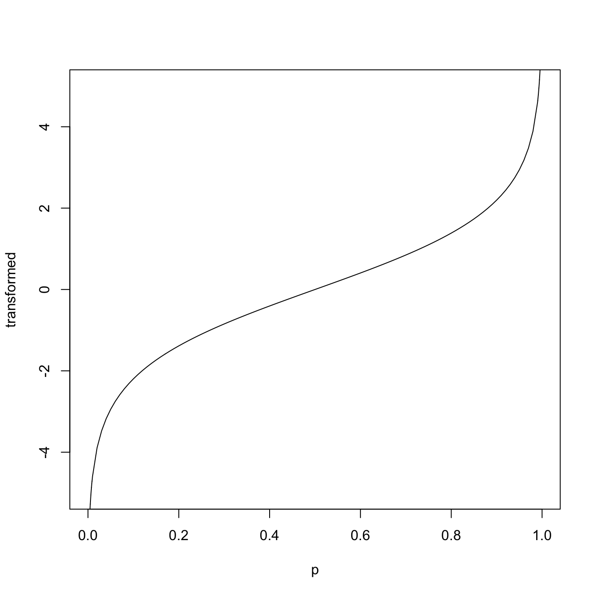- Same idea as M-value (though M-value uses log base 2 instead of natural log by convention):
- Transforms methylation proportions to the real line
- Mitigate heteroscedasticity
Binomial regression with overdispersion
- In ordinary logistic regression, \(p\) is assumed to be constant for all samples with in group
- To model overdispersion (additional biological variability), allow this quantity to vary
- For example, let \(p \sim Beta(\alpha, \beta)\) and \(M \sim Binom(N, p)\)
This is the Beta-Binomial distribution
Mean of M \(= \frac{n\alpha}{\alpha + \beta} = n\pi\)
Variance of M \(= \pi(1-\pi)(1 + (N - 1)\phi)\)
where \(\phi\) is the overdispersion parameter: \(\phi = \frac{1}{\alpha + \beta + 1}\)
- In R:
aod::betabin(cbind(successes,failures) ~ x, ~ x)
Pitfalls of binomial regression
- What happens to logit link function \(log\big(\frac{p}{1-p}\big)\) if \(p=0\) or \(1\)?
Caution
Binomial regression unstable for fully methylated or unmethylated cytosines
Computationally intensive to fit model at every cytosine
- DSS: Park & Wu 2016
- Differential methylation under general experimental design
- Alternate link function: \(arcsine(2p-1)\)
- Approximate fitting with Generalized Least Squares (GLS)
Generalized Least Squares (GLS)
Hybrid of linear regression and generalized linear model
Pro: stable & closed form estimates (fast)
Con: approximate
Key idea: flexible covariance structure allows for specification of approximate beta-binomial error
DMCs vs DMRs
Depending on the biological question, it might not make sense to only test individual CpGs (DMCs)
If instead differences occur across groups of nearby CpGs, we call them differentially methylated regions (DMRs)
Methylation of nearby CpGs is correlated
Individual CpGs are not thought to act independently (e.g. are regulated in tandem)
Individual cytosine differences
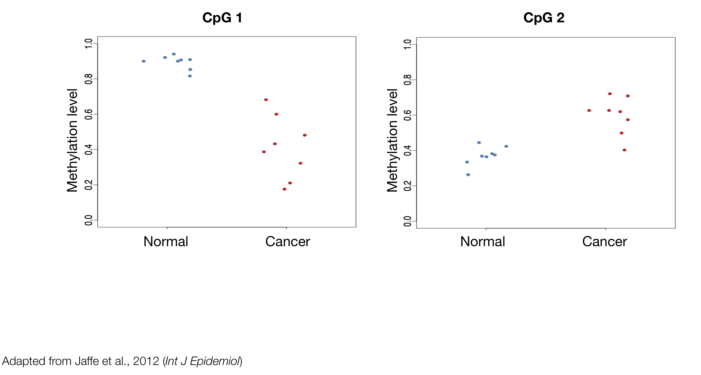CpG 1
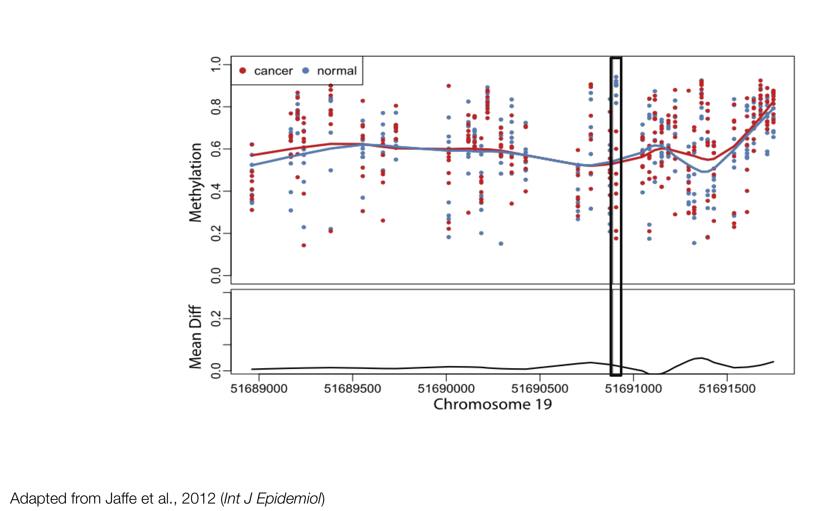CpG 2
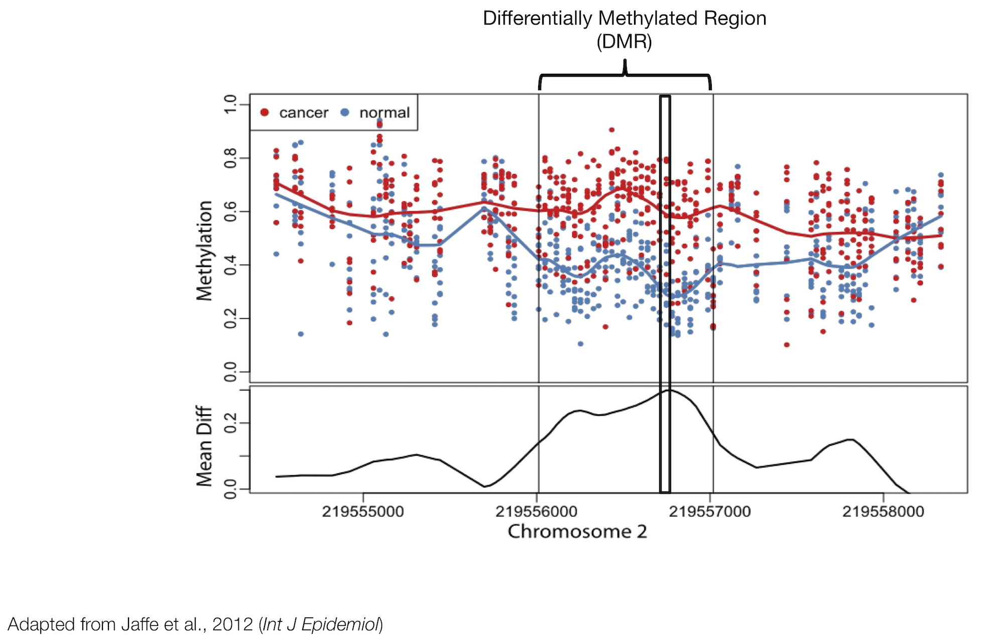Previous approaches: grouping significant CpGs
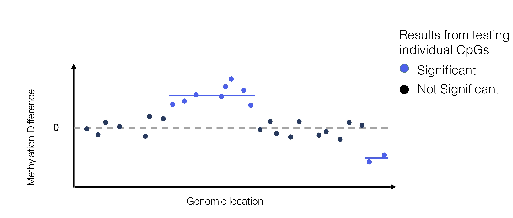Examples: BSmooth (Hansen et al. 2012), DSS (Park et al. 2016)
FDR at the region level
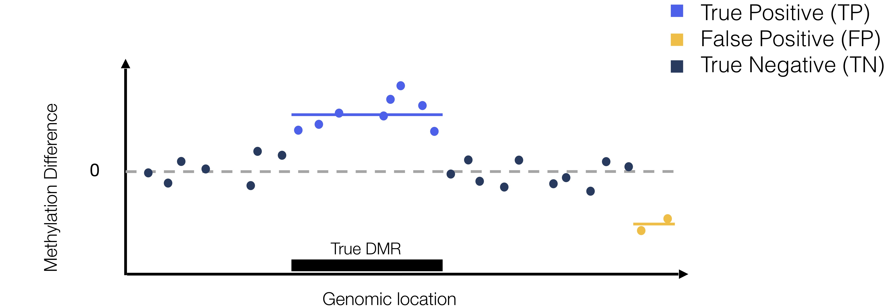\[ \text{False Discovery Rate (FDR)} = E\Big[\frac{FP}{FP + TP}\Big]\]
- \(FDR_{CpG} = 2/10 = 0.20\)
- \(FDR_{DMR} = 1/2 = 0.50\)
Accurate inference of DMRs
Key ideas:
- model methylation signal over region to account for correlated signal
- permutation to acheive accurate FDR control
Implemented in the dmrseq Bioconductor package
dmrseq: 2-stage approach
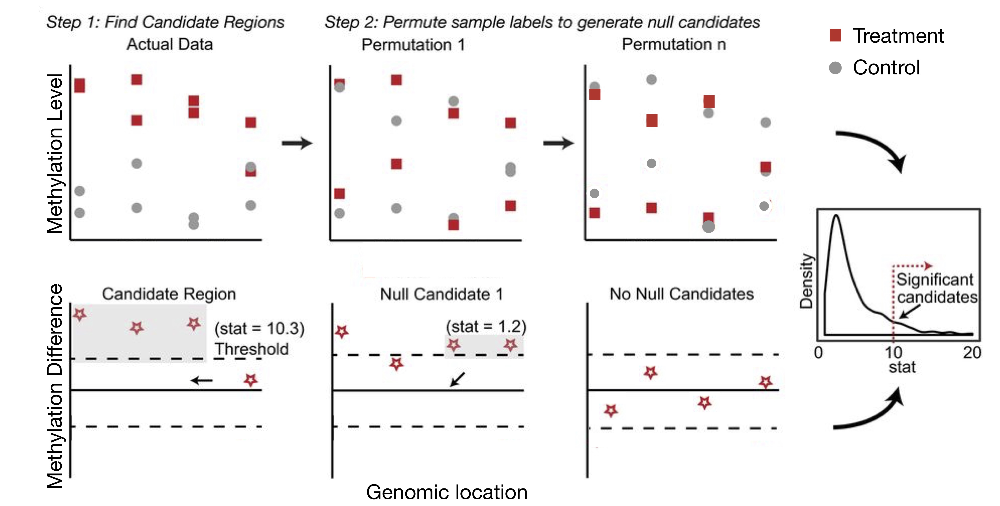dmrseq output
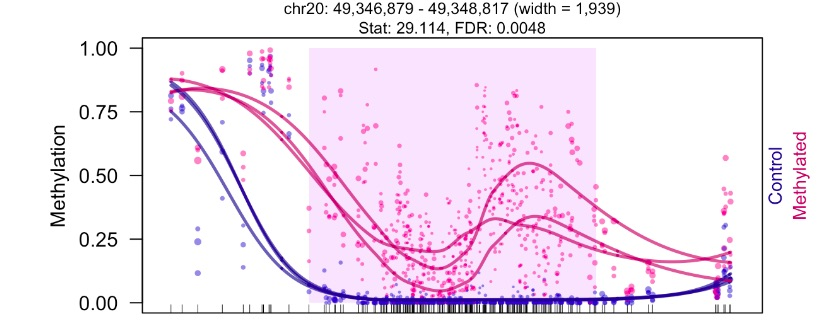- de novo regions with FDR estimate
- ranked by effect size of methylation difference
- can adjust for covariates
What’s changing: methylation or cell type composition?
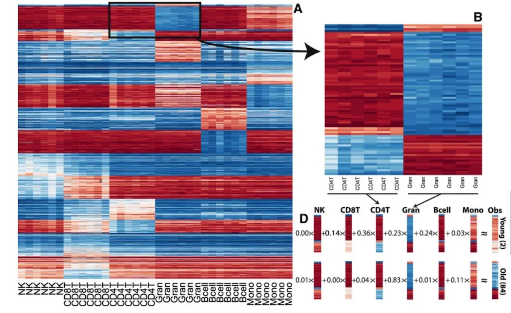Cell type composition confounding
Can estimate cell type composition with models built on purified cell type methylation data (not always available)